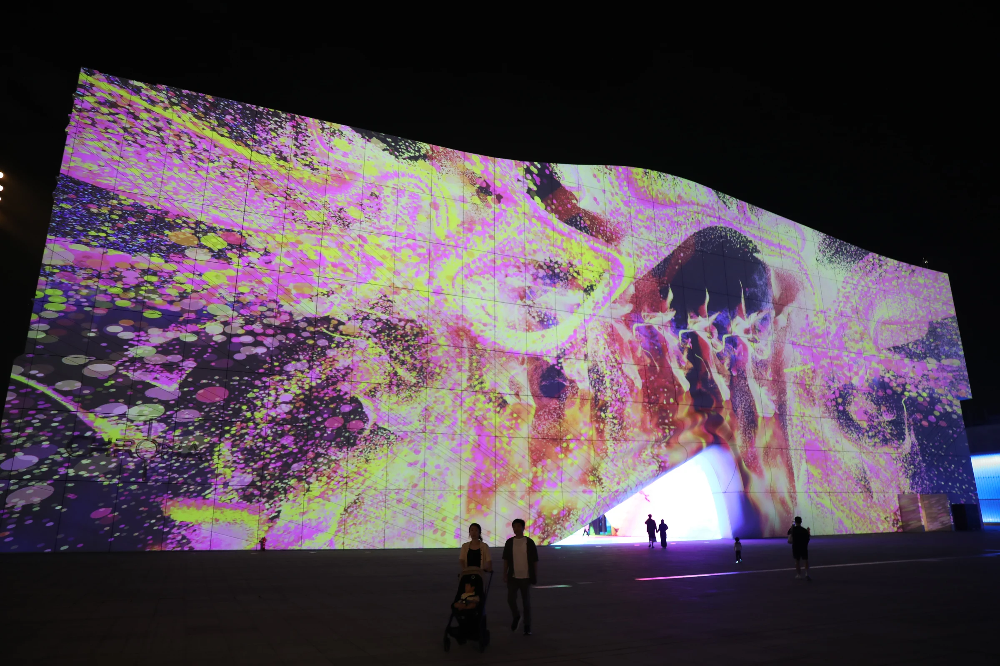
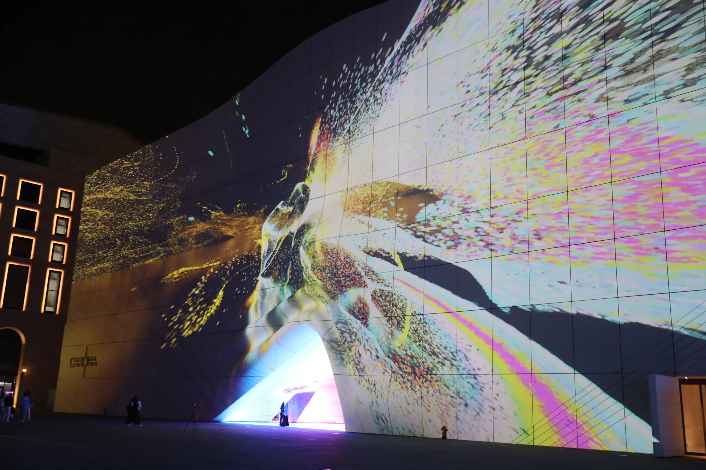
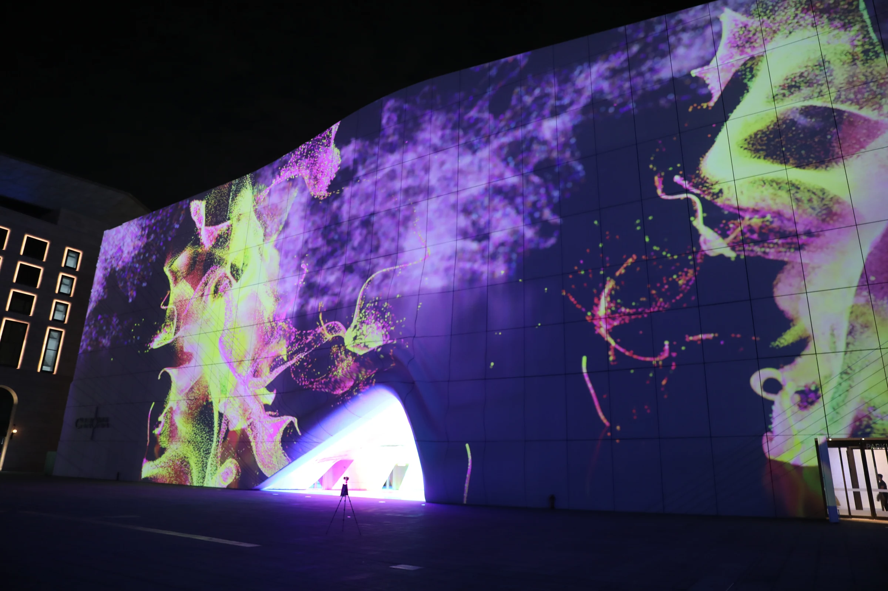
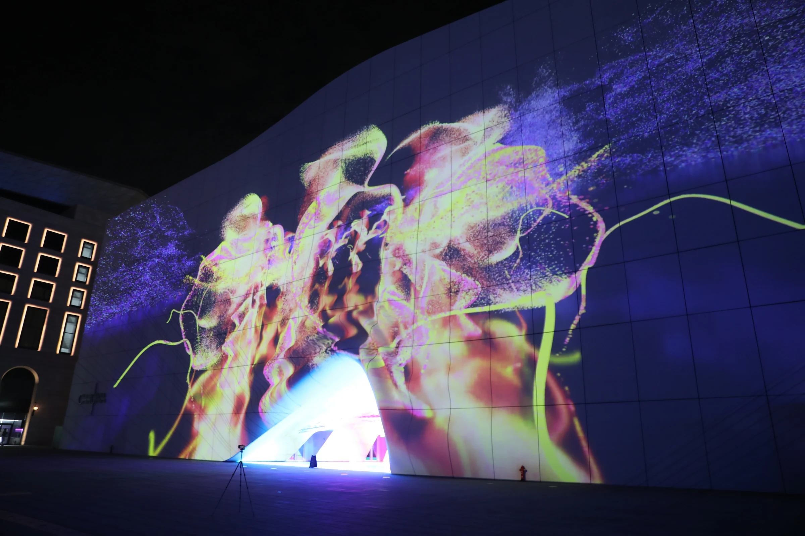
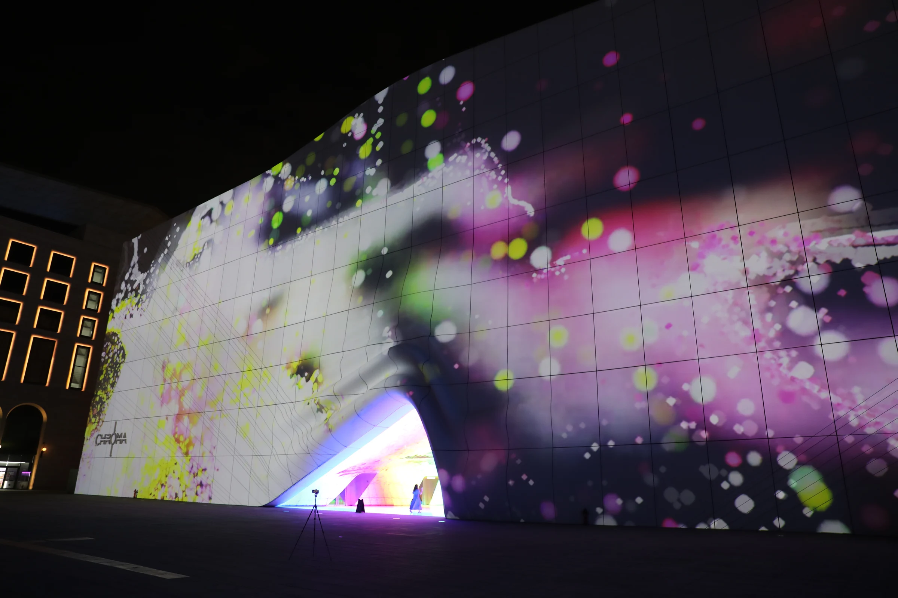
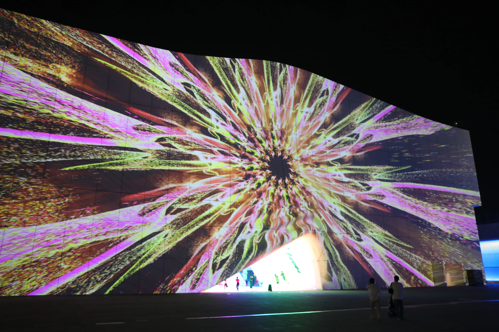
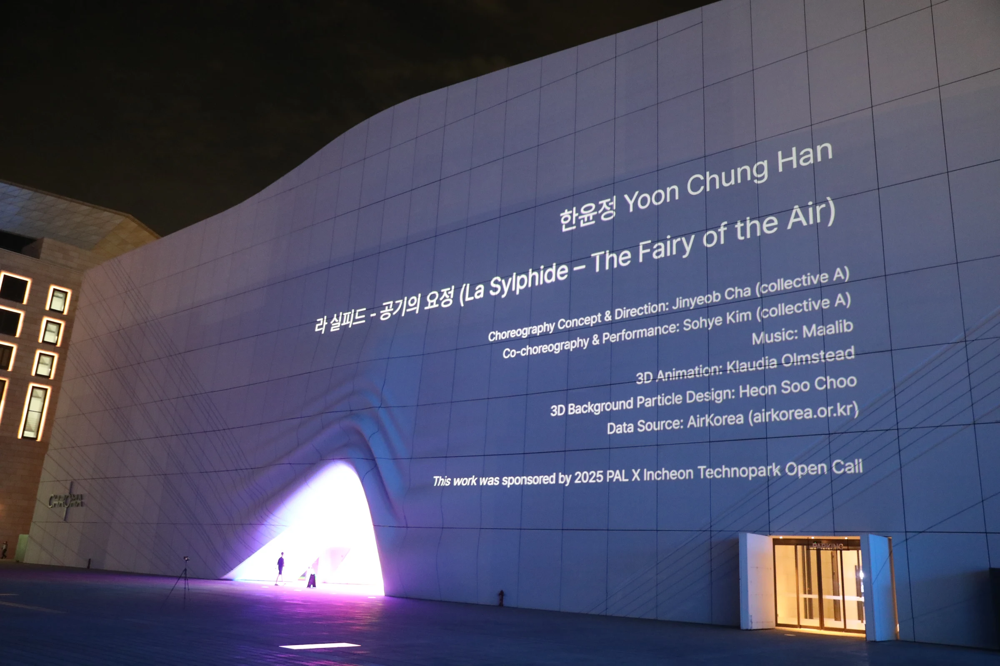

La Sylphide - The Fairy of the Air
2025 / Artwork by Yoon-Jeong Han
Creative Director: Yoon-Jeong Han @artofyoonhan
Choreography Concept & Direction: Jinyeob Cha (collective A) @cha_jinyeob @collective_a
Co-choreography & Performance: Sohye Kim (collective A) @sohyesohye
Music: Maalib @maalib
3D Animation: Klaudia Olmstead @klau.olm
3D Background Particle Design: Heon Soo Choo @hunter_the_c
Data Source: AirKorea (airkorea.or.kr)
Participated as a 3D background particle design
Paradise City, Incheon, Korea
<라 실피드 (La Sylphide) - 공기의 요정>은 모션캡처 기술을 활용해 무용수의 움직임을 선과 파티클로 변환하고,
인천의 공기질 데이터를 시각화합니다. 지난 20년간의 실제 대기 오염 데이터를 기반으로 영상 속 파티클의 수와 색, 움직임을 조절하며,
공기의 질감, 속도감, 그리고 감정을 반영한 다채로운 시각적 레이어로 구성하여 표현한 작품입니다.
고전 발레 속 요정 ‘실피드’를 재해석한 이 작품 속에서, 실피드는 도시의 공기 속을 유영하며 오염 입자와 감정을 수집하고 시각적 풍경으로 그려냅니다.
실피드는 사람들 몰래 도시의 공기를 따라 유영하며, 숨겨진 감정과 오염된 입자를 수집하고 ‘숨의 기록’을 만들어냅니다.
그녀는 바람을 따라 이동하며 공기를 다시 흐르게 하고, 지구가 가진 자연의 호흡 리듬을 복원시키려 합니다.
이 작품은 과학적 데이터와 시적 상상력을 결합해 공기의 질감과 흐름을 감각적으로 경험하도록 유도하며, 관람자에게 숨과 환경, 도시를 새롭게 인식하게 합니다.






←